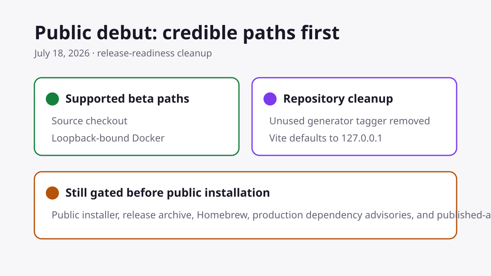

Grimoire Task Report
Public Debut Readiness

Before
The README advertised a known-unreachable installer, named a private repository, and exposed generator-specific build tooling. The Vite development server also listened on every network interface.
Problem
A public repository should be immediately understandable and safe to evaluate. Historical release evidence must not look like a present-tense installation promise.
Changes Added
- Removed the unused generator-specific Vite tagger and its dependency metadata.
- Bound Vite to loopback by default.
- Kept guided-tour coverage in unit tests while isolating unrelated browser flows from its first-run overlay.
- Made README and release notes lead with source checkout and Docker, while keeping package routes explicitly gated.
- Marked the old release decision as a historical record that requires fresh evidence.
Result
First-time readers now see a truthful supported path, contributor setup matches the actual Vite port, and public-install claims remain blocked until live validation is complete.
Verification
npm run check— lint, type checks, daemon tests, API-doc drift check, and production build.npm ci --ignore-scripts --dry-run— lockfile installation is reproducible.npm run test:e2e— browser-backed core-flow checks after Chromium installation.npm audit --omit=dev— 7 high-severity production advisories remain open.
Follow-ups
Do not publish the installer, Homebrew, or release-archive commands until public distribution and installed-app smoke validation pass. Resolve or explicitly triage the remaining production dependency advisories before a public beta announcement.
Files Changed
vite.config.tspackage.jsonand lockfilesREADME.mdCONTRIBUTING.mddocs/release-notes-v0.1.0-beta.mddocs/release-decision-v0.1.0-beta.md